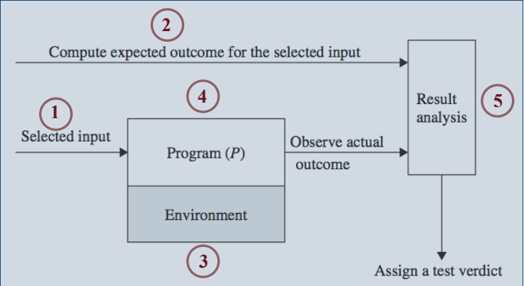

A unidade é executada e a saída é observada.

1. Selecionar as entradas. 2. Calcular a saída esperada 3. Configurar o ambiente de execução do programa 4. Executar o programa 5. Analisar o resultado do teste
§ O teste não comunica a sua intenção, ou seja, o que ele está tentando fazer. § O teste tem vários caminhos de execução, ao invés de ter uma sequência linear de comandos. § Duplicação de código em diferentes testes.
Independente do processo, os testes devem ser bem escritos. ¤ Padrões de Testes ¤ Anti-padrões de testes (test smells): descrevem problemas recorrentes que os padrões ajudam a resolver.
SUT (System Under Test) É qualquer coisa que está sendo testada. Nos testes de unidade o SUT é uma classe ou métodos. Nos testes de aceitação o SUT é todo o sistema ou um subsistema.
Test Fixture Qualquer coisa necessária para exercitar o SUT.
Cada teste é projetado em 4 fases:
1. Configuração das Fixtures (Fixture Setup) O SUT é criado e colocado no estado requerido para ser executado, ou seja, as fixtures necessárias para que o SUT exiba o comportamento esperado são configuradas.
2. Exercício do SUT (Exercise SUT) É executado um único comportamento do SUT que precisa ser verificado.
3. Verificação do Resultado (Result Verification) Verifica se a saída esperada foi obtida ou se o teste falhou.
4. Destruição das Fixtures (Fixture Teardown) Destrói as fixtures e coloca o sistema no estado que estava antes do teste.
Referências Autor: Patricia Vilhain - INE5448 - Tópicos Especiais em Aplicações Tecnológicas I